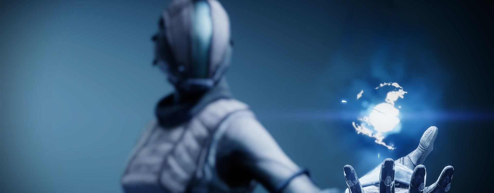
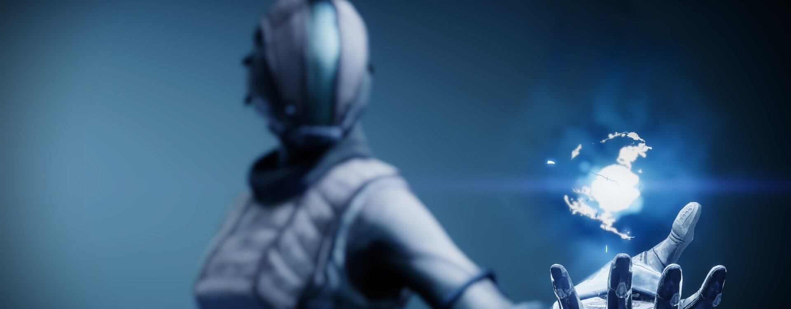

L'Arcaniste
Guerriers érudits de la Lumière, les Arcanistes se dévouent à l'étude du Voyageur et de ses pouvoirs. L'esprit d'un Arcaniste regorge de terribles secrets, et vacille entre génie indéniable et folie véritable. Sur le champ de bataille, ces mystères redoutables pourraient faire éclater la réalité elle-même
Le premier jour où j'ai invoqué l'orage, quelque chose se terminait. La fin d'un voyage, le sommet d'une montagne. Mais quand vous quittez la montagne, vous ne l'emportez pas avec vous. Comment allais-je pouvoir garder cette vision profonde que j'avais depuis l'œil du cyclone, qui débloquait ma ligne directe vers l'ouragan ?
Une paix orageuse. Le calme et la tempête. Par où commencer ?
Une pluie de questions s'abattait sur moi alors que j'essayais de mettre mes idées en pratique. L'odeur âcre du fluide radiolaire me rappela que ma formation était terminée. Étais-je prêt pour ça ? Avais-je choix ?
Battu, en sang, je regardais les regards vides de mes ennemis. Ils étaient terrifiants, eux que j'avais tant accablés. Mais j'ai vu ce qui se cache, immobile, au milieu du vacarme.
Du courage. Le courage d'affronter le torrent, de proclamer la paix face à la violence. Le courage est le seul appel que l'orage entendra.
Il ne peut m'ignorer.
Le tonnerre gronde et la foudre frappe. Le vent souffle et il pleut à verse. Mes ennemis n'existent plus. Mais la paix... La paix ne m'a jamais quitté.
Rite de l'orage
Transe de l'orage
Déchaînez des éclairs cryo-électriques de vos propres mains et électrifiez les cibles avec des charges dévastatrices de lumière cryo-électrique qui s'intensifient au cours du temps. Lancer Transe de l'orage crée une onde de choc en dessous de vous.
Extension du chaos
Libérez un rayon d'énergie cryo-électrique canalisé à longue portée.
- Grenades